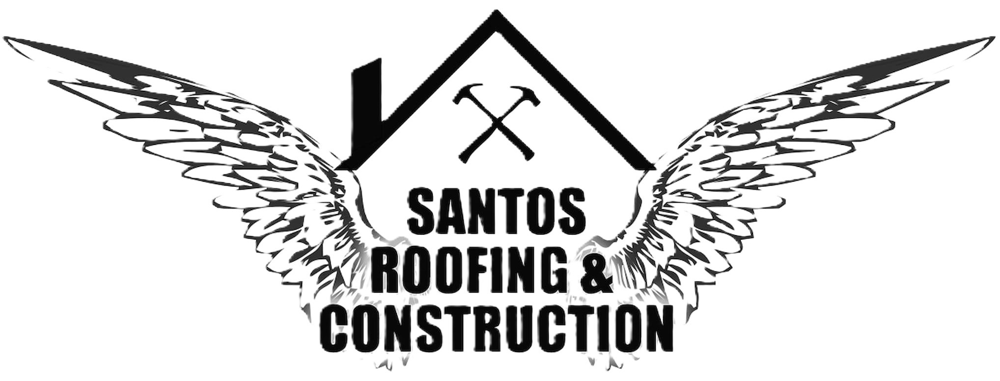

This Website will help people in Utah and the surrounding areas find a reliable, trustworthy, family owened Construction company in their area. It will provide photos of past job that have been done and a list of everything this company offers and will be user-friedly.
Anyone who needs construction work done on their home such as: a roof repair or full roof replacement, needs new siding, flooring, building sheds at their residence, etc. I would also like to add a place where they can schedule an inspection in order to recieve an estimate.
What are the different brands used for shingles?
What are my options for colors?